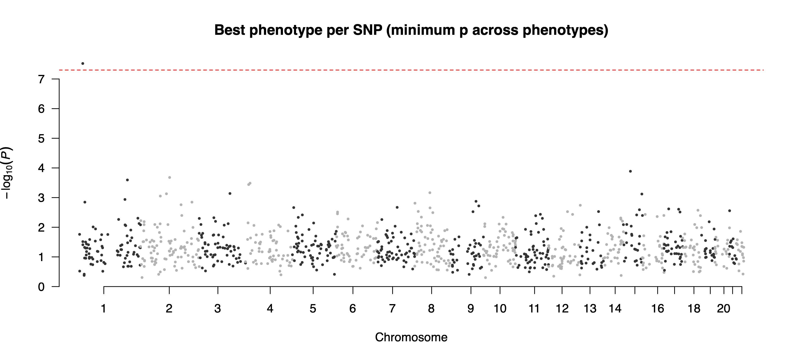
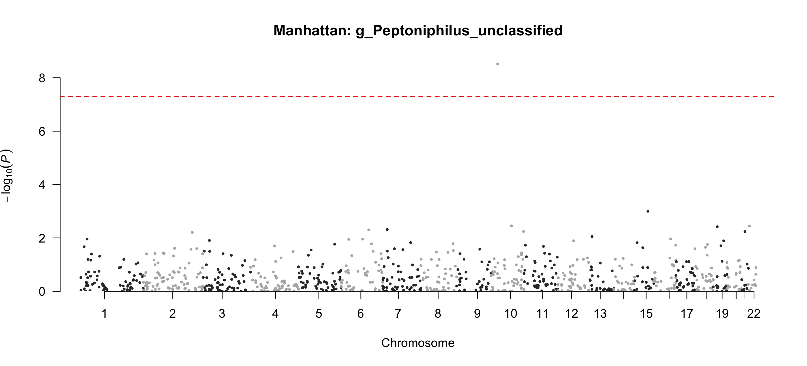
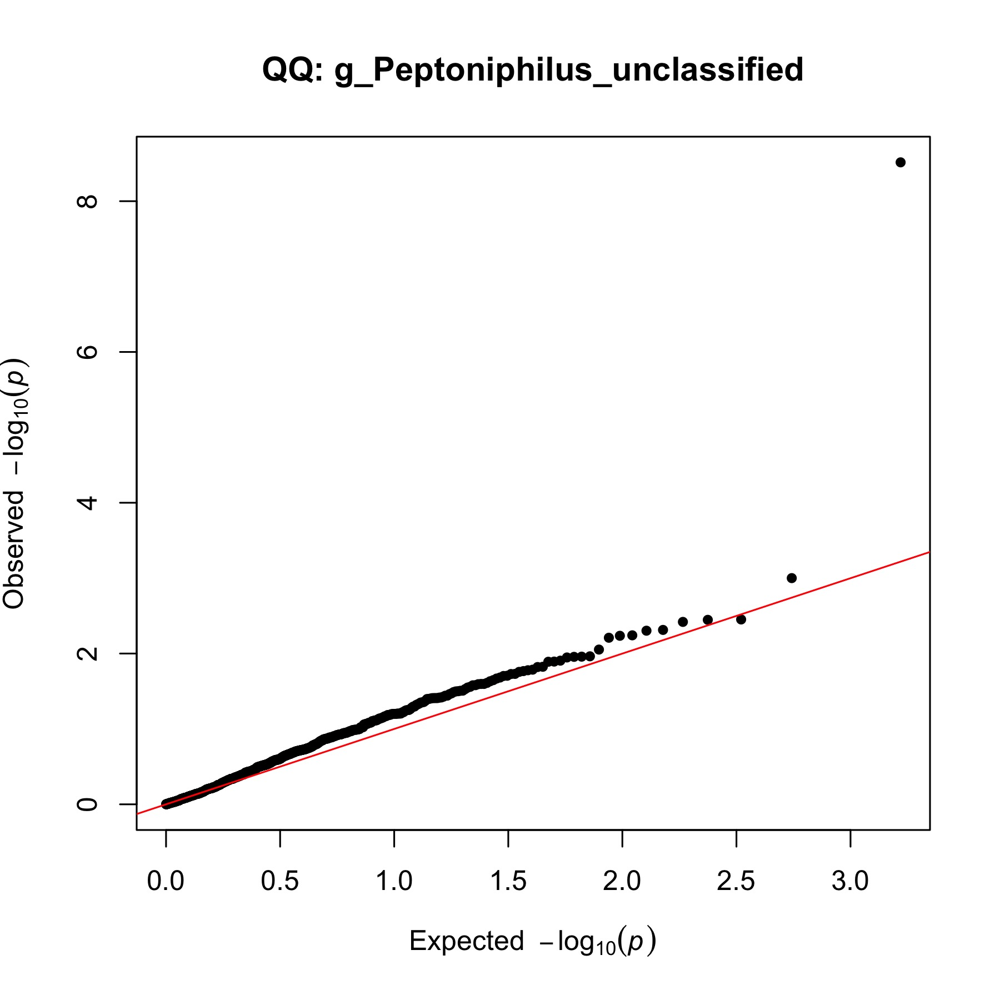
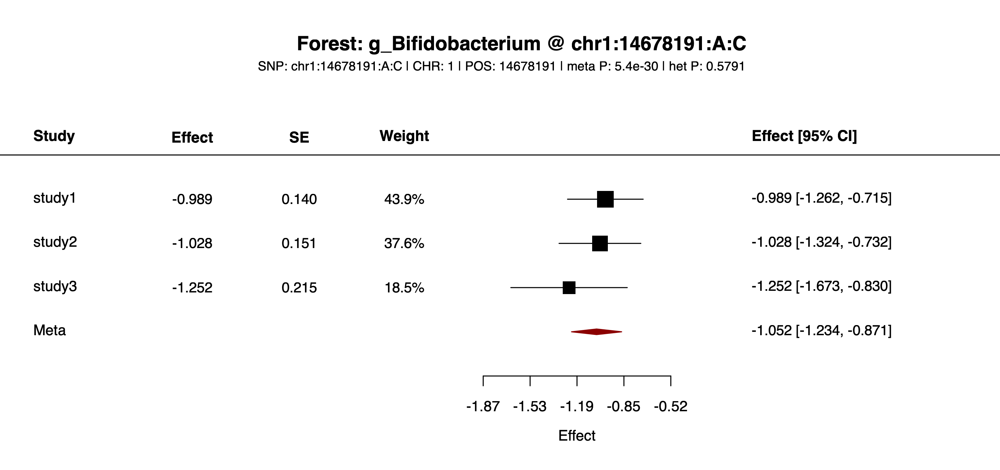
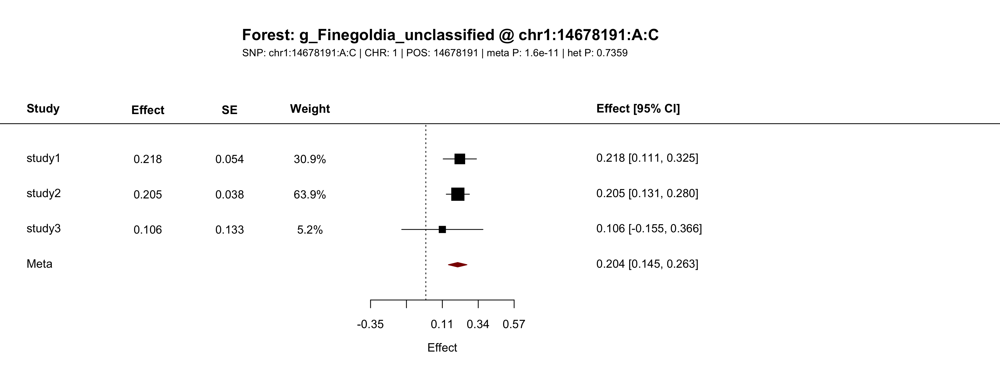
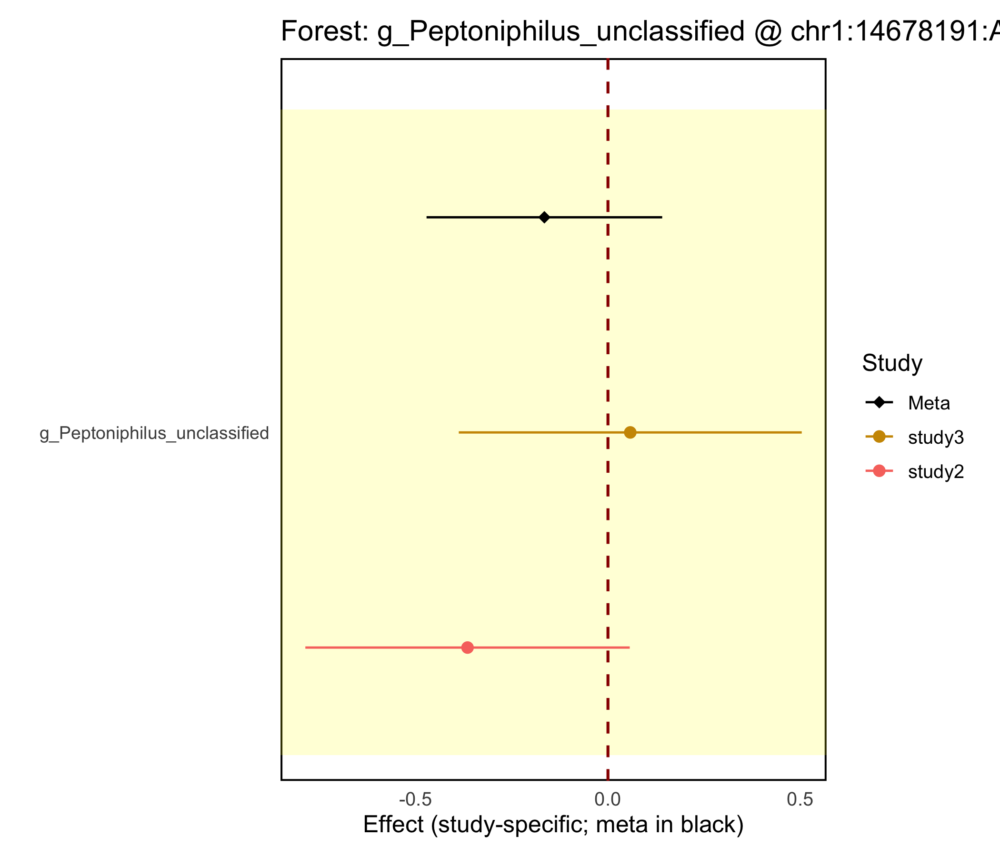

PALM-mGWAS Usage Guide
This page explains how to run the PALM-mGWAS R package: key functions, required inputs, outputs, and visualization workflows.
Environment & Dependencies
Set up the runtime environment before installing or running any PALM-mGWAS command. The package depends on compiled R libraries, so the most reliable workflow is to keep R, PALM, and all supporting packages inside one isolated environment instead of mixing system-level and project-level installs.
Use the repository's
pixi environment for local runs. It keeps the R version, BLAS/LAPACK libraries, and package installation path aligned with the scripts in this guide.
Use the published Docker image if you want a prebuilt runtime with PALM-mGWAS, PALM,
abess, and PLINK already installed.
Do not install
PALM into a different R library and then run PALM-mGWAS from another environment. Mixed BLAS or mixed R libraries are the main source of setup failures.
- R version: use
R >= 4.2. The bundled pixi setup already pins a compatible runtime. - Core R packages:
PALM,snpStats,data.table,dplyr,ggplot2,qqman,stringr, andtibble. - System consistency: install PALM and PALM-mGWAS into the same library tree that will be used at runtime.
- If you do not use pixi or Docker: create a clean isolated R environment yourself and install the required packages there before running the CLI.
In practice, you should choose exactly one execution mode for a project directory: either local pixi run ... commands or Docker-based commands. Both are documented below; the rest of the workflow examples keep the two styles parallel.
Installation (two options)
Option A: pixi source installation
Use this method if you want to run the workflow directly from the source tree with the pixi-managed R environment.
# install pixi (if not yet)
curl -fsSL https://pixi.sh/install.sh | bash
# if needed, add pixi to PATH for the current shell
export PATH="$HOME/.pixi/bin:$PATH"
# clone the repository and enter the source tree
git clone git@github.com:CheeseLee888/PALM-mGWAS.git
cd PALM-mGWAS
# create the base pixi environment
pixi install
# install extra R dependencies into the pixi environment
pixi run install-abess
pixi run env PKG_LIBS="-L$PWD/.pixi/envs/default/lib -lopenblas -llapack -lblas" \
R CMD INSTALL thirdParty/PALM_0.1.0.tar.gz
# install PALM-mGWAS itself into the same pixi R library
pixi run R CMD INSTALL .One-time setup: pixi install only creates the base environment. Before running the workflow scripts, you should also install abess, the bundled PALM tarball, and the local PALMmGWAS package into that pixi-managed R library.
Command prefix for routine runs: after the one-time setup above, most commands in this guide can be run as pixi run Rscript extdata/<script>.R ... from the repository root.
Do not use the system R for PALM installation: install PALM through pixi run so that it links against the BLAS/LAPACK libraries inside the pixi environment. On macOS, avoid wrapping the install command in pixi run bash -lc '...' because a login shell can resolve R back to the system binary and trigger errors such as missing libopenblas.0.dylib when library(PALM) is loaded.
Option B: Docker image
# pull the published image
docker pull --platform=linux/amd64 cheeselee/palm-mgwas:latest
# enter the repository example directory
cd /path/to/PALM-mGWAS
# run a packaged script inside the container
docker run --rm --platform=linux/amd64 \
-v "$PWD":/work \
cheeselee/palm-mgwas:latest \
step1_null.R --helpThis published Docker image already contains pixi, abess, PALM, PALMmGWAS, and PLINK1.9, so Docker users do not need to repeat the local source installation steps from Option A. Mount your working directory to /work and call the installed wrapper scripts directly.
Workflow
Run the packaged CLI directly after completing the one-time installation steps above; you do not need to call exported R functions manually. Before using the relative paths shown below, first cd into the PALM-mGWAS package root. The workflow below goes from Step0 to Visualization.
step0_checkInput.R optionally filters low-depth samples, checks IID consistency across abundance, covariates, and genotype input, reorders tables to match genotype sample order, and can write sequencing-depth summaries.step1_null.R fits the PALM null model from the Step0-aligned abundance and covariate tables and can write feature summaries.step2_summary.R reads genotype input, runs PALM score tests, and can write SNP summaries alongside per-feature estimates.step3_meta.R meta-analyzes multiple studies and adds meta_* columns.Visualization.R generates Manhattan and forest plots.- Genotype input used by Step0 / Step2: set
genoFileonce, as a PLINK prefix such asexample/input/study1/geno, a VCF path such asexample/input/study1_vcf/geno.vcf.gz, or a BGEN path such asexample/input/study1_bgen/geno.bgen. - Format-specific options: VCF input is auto-detected from
DSorGTFORMAT fields, preferringDSwhen present. BGEN input currently uses internal allele-order handling equivalent toref-last.
Step0: Check and Align Input IDs
pixi run --manifest-path=pixi.toml Rscript extdata/step0_checkInput.R \
--abdFile=${abdFile} \
--covFile=${covFile} \
--abdAlignedFile=${abdAlignedFile} \
--covAlignedFile=${covAlignedFile} \
--covarColList=${covarColList} \
--depthCol=${depthCol} \
--depth.filter=${depth_filter} \
--genoFile=${genoFile} \
--outputSeqDepthFile=${outputSeqDepthFile}docker run --rm --platform=linux/amd64 \
-v "$PWD":/work -w /work \
cheeselee/palm-mgwas:latest \
step0_checkInput.R \
--abdFile=/work/${abdFile} \
--covFile=/work/${covFile} \
--abdAlignedFile=/work/${abdAlignedFile} \
--covAlignedFile=/work/${covAlignedFile} \
--covarColList=${covarColList} \
--depthCol=${depthCol} \
--depth.filter=${depth_filter} \
--genoFile=/work/${genoFile} \
--outputSeqDepthFile=/work/${outputSeqDepthFile}- Purpose: optionally filter low-depth samples, then verify that abundance, covariates, and genotype input remain aligned before modeling.
- Behavior: if
depth.filter > 0, samples with depth<= depth.filterare removed before genotype matching. Depth comes fromcovFile[depthCol]whendepthColis supplied, otherwise from row sums ofabdFile. - Missing-value filtering: samples with missing values in Step1-required variables from
covarColListanddepthColare removed before ID matching. IfcovarColList=NULL, Step0 defaults to all non-ID columns incovFile, matching Step1 behavior. - Alignment rule: the step keeps samples matched across
abdFile,covFile, and genotype input, then orders the retained samples to match genotype sample order. - Genotype sample count: genotype input may contain extra samples, but it must not miss any sample retained from
abdFile/covFileafter filtering. - VCF/BGEN handling: within Step0, VCF sample IDs are read directly from the VCF header. BGEN input is converted to a temporary PLINK dataset and sample IDs are read from the converted
.fam. - Optional info output: set
--outputSeqDepthFileto writeDepthInfo. Behavior definition:DepthInfouses the exact depth values Step0 uses for sample filtering. IfdepthColis provided, this file comes from that covariate column; otherwise it uses row sums ofabdFile. - Requirement: all three inputs are mandatory in the current CLI.
- Accepted genotype input: PLINK prefix without extension, or a file ending in
.vcf,.vcf.gz,.vcf.bgz, or.bgen. - Failure cases: duplicated IDs, missing values, missing
.famfor PLINK input, or non-identical IID sets.
| Name | Type | Default | Meaning | Example |
|---|---|---|---|---|
--abdFile | character | "" | Abundance table whose sample order will be checked/reordered | --abdFile=example/input/study1/abd.txt |
--covFile | character | "" | Covariate table whose sample order will be checked/reordered | --covFile=example/input/study1/cov.txt |
--abdAlignedFile | character | "" | Output path for the filtered/aligned abundance table; original input is not overwritten | --abdAlignedFile=example/output/study1/abd_aligned.txt |
--covAlignedFile | character | "" | Output path for the filtered/aligned covariate table; original input is not overwritten | --covAlignedFile=example/output/study1/cov_aligned.txt |
--covarColList | character | "NULL" | Optional comma-separated covariate columns required by Step1; if omitted, all non-ID columns in covFile are used. Samples missing these values are removed before ID matching | --covarColList=AGE,SEX,PC01; --covarColList=NULL |
--depthCol | character | "NULL" | Optional covariate column used as sequencing depth during Step0 sample filtering; if omitted, depth is computed from row sums of abdFile | --depthCol=SeqDepth; --depthCol=NULL |
--depth.filter | double | 0 | Sample-level depth threshold applied before genotype ID matching; samples with depth <= this value are removed | --depth.filter=0; --depth.filter=1000 |
--genoFile | character | "" | Genotype input used as the sample-order reference: PLINK prefix, VCF, or BGEN | --genoFile=example/input/study1/geno; --genoFile=example/input/study1_bgen/geno.bgen |
--outputSeqDepthFile | character | "NULL" | Optional output file for sequencing-depth info used by Step0 sample filtering | --outputSeqDepthFile=example/output/study1/info_seqdepth.txt; --outputSeqDepthFile=NULL |
Step1: Fit Null Model
pixi run --manifest-path=pixi.toml Rscript extdata/step1_null.R \
--abdFile=${abdAlignedFile} \
--covFile=${covAlignedFile} \
--covarColList=${covarColList} \
--depthCol=${depthCol} \
--prev.filter=${prev_filter} \
--outputFeatureFile=${outputFeatureFile} \
--NULLmodelFile=${NULLmodelFile}docker run --rm --platform=linux/amd64 \
-v "$PWD":/work -w /work \
cheeselee/palm-mgwas:latest \
step1_null.R \
--abdFile=${abdAlignedFile} \
--covFile=${covAlignedFile} \
--covarColList=${covarColList} \
--depthCol=${depthCol} \
--prev.filter=${prev_filter} \
--outputFeatureFile=${outputFeatureFile} \
--NULLmodelFile=${NULLmodelFile}- Inputs: the Step0-aligned abundance table plus the aligned covariate table.
- Outputs:
NULLmodelFilecontainingmodglmm; directories are created if missing. - Behavior: pass
--covFile=NULLto run covariate-free; the CLI converts empty string orNULLto RNULL. - Docker path note: when you mount the project at
/workand use-w /work, relative paths such asexample/input/study1/abd.txtwork directly inside the container. This also avoids invalid strings like/work/NULLfor optional arguments. - Covariate subset: pass
--covarColList=AGE,SEX,PC01to use only those columns fromcovFile; names must match the header exactly. - PALM arguments:
depthColselects one column fromcovFileas PALMdepth; if omitted, PALM uses row sums ofabdFile.prev.filteris forwarded directly toPALM::palm.null.model(). - Optional info output: set
--outputFeatureFileto writeFeatureInfo. Behavior definition:FeatureInfois computed from the Step1 input abundance table beforeprev.filterremoves low-prevalence features. - Tips: ensure no duplicated sample IDs; use abundance(count); keep sessionInfo for reproducibility.
| Name | Type | Default | Meaning | Example |
|---|---|---|---|---|
--abdFile | character | "" | Aligned abundance table used to fit the null model | --abdFile=example/output/study1/abd_aligned.txt |
--covFile | character | "" (normalized to NULL) | Optional aligned covariate file; the CLI also accepts empty string or NULL to omit covariates | --covFile=example/output/study1/cov_aligned.txt; --covFile=NULL |
--covarColList | character | "" (normalized to NULL) | Optional comma-separated covariate column names to keep from covFile | --covarColList=AGE,SEX; --covarColList=NULL |
--depthCol | character | "" (normalized to NULL) | Optional column name in covFile used as PALM depth; if omitted, PALM uses row sums of abdFile | --depthCol=SeqDepth; --depthCol=NULL |
--prev.filter | double | 0.1 | Feature prevalence threshold passed to PALM | --prev.filter=0.1; --prev.filter=0 |
--outputFeatureFile | character | "NULL" | Optional output file for Step1 feature prevalence and average proportion before feature filtering | --outputFeatureFile=example/output/study1/info_feature.txt; --outputFeatureFile=NULL |
--NULLmodelFile | character | "" | Output .rda file storing the fitted PALM null model | --NULLmodelFile=example/output/study1/step1_allpheno.rda |
Step2: Per-study Summary
pixi run --manifest-path=pixi.toml Rscript extdata/step2_summary.R \
--genoFile=${genoFile} \
--NULLmodelFile=${NULLmodelFile} \
--PALMOutputFile=${palm1_step2_prefix} \
--chrom=${chrom} \
--featureColList=${featureColList} \
--minMAF=${minMAF} \
--minMAC=${minMAC} \
--outputSnpFile=${outputSnpFile} \
--correct=${correct} \
--useCluster=${useCluster}docker run --rm --platform=linux/amd64 \
-v "$PWD":/work -w /work \
cheeselee/palm-mgwas:latest \
step2_summary.R \
--genoFile=/work/${genoFile} \
--NULLmodelFile=/work/${NULLmodelFile} \
--PALMOutputFile=/work/${palm1_step2_prefix} \
--chrom=${chrom} \
--featureColList=${featureColList} \
--minMAF=${minMAF} \
--minMAC=${minMAC} \
--outputSnpFile=/work/${outputSnpFile} \
--correct=${correct} \
--useCluster=${useCluster}- Inputs: genotype input plus null model
.rda. Step2 accepts a PLINK prefix,.vcf/.vcf.gz/.vcf.bgz, or.bgen. - Outputs: one per-feature
.txtfile with columnsSNP, CHR, POS, est, stderr, pval. - SNP format: dots are replaced by colons, e.g.,
chr1:12345:REF:ALT. - Temporary conversion: VCF input is read directly. BGEN input is converted to a temporary PLINK dataset before calling PALM, and intermediate files are automatically cleaned up.
- VCF import: Step2 auto-detects
DSorGTfrom the VCF FORMAT field and prefersDSwhen present. - BGEN import: BGEN input currently uses internal allele-order handling equivalent to
ref-last. - Chrom filter: current CLI default is empty string; use
--chrom=1to restrict, otherwise leave empty to keep all chromosomes. - Feature subset: pass
--featureColList=g_Bifidobacterium,g_Peptoniphilus_unclassifiedto test only those modeled features from the Step1 null model;NULLkeeps all features. - MAF filter: default is
--minMAF=0.05; use another threshold as needed, and0disables this filter. - MAC filter: default is
--minMAC=5; use0to disable minor-allele-count filtering. - Optional info output: set
--outputSnpFileto writeSNPInfo. Behavior definition:SNPInfois computed from the Step2 genotype matrix after NULL-model sample alignment and optional chromosome filtering, but beforeminMAF/minMACremove SNPs. - Clustering:
useClusterdefaults toFALSE. When set toTRUE, FID from the PLINK.famfile is passed to PALM; this is only supported for native PLINK input, and all-zero FIDs still disable clustering. - correct: forwarded to
PALM::palm.get.summary(). Usemedianfor median-based compositional correction,tunefor a data-driven tuned correction, orNULL/ empty string to disable compositional correction and keep abundance-level summary statistics.
| Name | Type | Default | Meaning | Example |
|---|---|---|---|---|
--genoFile | character | "" | Genotype input for association testing: PLINK prefix, VCF, or BGEN | --genoFile=example/input/study1/geno; --genoFile=example/input/study1_bgen/geno.bgen |
--NULLmodelFile | character | "" | Null model generated by Step1 | --NULLmodelFile=example/output/study1/step1_allpheno.rda |
--PALMOutputFile | character | "" | Output prefix for per-feature result files | --PALMOutputFile=example/output/study1/step2_allchr |
--chrom | character | "" | Optional chromosome subset; leave empty to keep all chromosomes | --chrom=1; omit it or set --chrom= for all chromosomes |
--featureColList | character | "NULL" (normalized to NULL) | Optional comma-separated feature IDs to keep from the Step1 null model | --featureColList=g_Bifidobacterium,g_Peptoniphilus_unclassified; --featureColList=NULL |
--minMAF | double | 0.05 | Optional minimum minor allele frequency threshold for SNP filtering | --minMAF=0.05; --minMAF=0 |
--minMAC | integer | 5 | Optional minimum minor allele count threshold for SNP filtering | --minMAC=5; --minMAC=0 |
--outputSnpFile | character | "NULL" | Optional output file for Step2 SNP summary before minMAF/minMAC filtering | --outputSnpFile=example/output/study1/info_snp.txt; --outputSnpFile=NULL |
--correct | character | "NULL" (normalized to NULL) | Compositional effect correction method. median uses the median of estimates, tune uses a data-driven tuned value, and NULL / empty string disables compositional correction. A practical rule is median for sparse signals (<= 20% differential AA features) and tune for moderately dense signals (> 20% and <= 50%). Both correction methods assume differential AA features are <= 50%. | --correct=median; --correct=tune; --correct=NULL; --correct= |
--useCluster | logical | FALSE | Whether to use FID-based clustering from the PLINK .fam file; only supported for native PLINK input | --useCluster=TRUE; --useCluster=FALSE |
Step3: Meta Analysis
# studyFile lines: studyIDdir (e.g., "study1\t${outputFolder}/study1")
pixi run --manifest-path=pixi.toml Rscript extdata/step3_meta.R \
--studyFile=${studyFile} \
--pattern='${pattern}' \
--metaDir=${metaDir} \
--metaPrefix=${metaPrefix} docker run --rm --platform=linux/amd64 \
-v "$PWD":/work -w /work \
cheeselee/palm-mgwas:latest \
step3_meta.R \
--studyFile=/work/${studyFile} \
--pattern='${pattern}' \
--metaDir=/work/${metaDir} \
--metaPrefix=${metaPrefix}- Inputs:
studyFileis a text file with two columns per line:studyIDand Step2 output directory. Files inside those directories are selected bypattern. - Outputs: one file per feature in
metaDirnamedmetaPrefix<pheno>.txt, containingmeta_est,meta_stderr,meta_pval, optionalmeta_pval.het, plus per-studystudy*_est/study*_stderr. - Single-study mode: still useful to standardize column names for plotting.
- Pattern: this is the key setting for Step3. Step2 writes files such as
step2_allchr_g_Bifidobacterium.txtandstep2_allchr_g_Peptoniphilus_unclassified.txt, where the feature name is embedded in the filename. Yourpatternshould match the fixed prefix and suffix, but leave the feature part to be captured from the filename, for examplestep2_allchr_.*[.]txt$orstep2_chr1_.*[.]txt$. In other words, the regex should include the position where the feature name appears, rather than hard-coding one feature. - Current CLI behavior: the wrapper fixes
features = NULLandkeep_het = TRUE.
| Name | Type | Default | Meaning | Example |
|---|---|---|---|---|
--studyFile | character | "" | Study list file mapping study IDs to result directories | --studyFile=example/input/study_dirs.txt for local pixi runs; --studyFile=example/input/study_dirs_docker.txt for Docker runs |
--pattern | character | "" | Regex selecting which Step2 result files to meta-analyze. Step2 filenames contain the feature in the middle, such as step2_allchr_g_Bifidobacterium.txt, so the regex should match the fixed prefix/suffix and leave the feature part variable for extraction. In zsh, quote this argument to avoid shell glob expansion. Using [.]txt$ is usually simpler than backslash-escaping the dot. | --pattern='step2_allchr_.*[.]txt$'; --pattern='step2_chr1_.*[.]txt$'; do not write --pattern=step2_allchr_g_Bifidobacterium.txt if you want all features |
--metaDir | character | "" | Output directory for meta-analysis tables | --metaDir=example/output/meta |
--metaPrefix | character | "" | Filename prefix for meta-analysis outputs | --metaPrefix=step3_meta_ |
Visualization
# case 1: combined Manhattan across features
pixi run --manifest-path=pixi.toml Rscript extdata/Visualization.R \
--metaDir=${metaDir} \
--pattern='${visPattern}' \
--plotDir=${plotDir} \
--pCut=${pCut}
# case 2: one feature
pixi run --manifest-path=pixi.toml Rscript extdata/Visualization.R \
--metaDir=${metaDir} \
--pattern='${visPattern}' \
--plotDir=${plotDir} \
--pheno=${pheno} \
--plotMinP=${plotMinP:-NA}
# case 3: one SNP across features
pixi run --manifest-path=pixi.toml Rscript extdata/Visualization.R \
--metaDir=${metaDir} \
--pattern='${visPattern}' \
--plotDir=${plotDir} \
--snp=${snp} \
--pCut=${pCut} \
--showMeta=${showMeta:-TRUE} \
--showHet=${showHet:-TRUE}
# case 4: one feature-SNP pair
pixi run --manifest-path=pixi.toml Rscript extdata/Visualization.R \
--metaDir=${metaDir} \
--pattern='${visPattern}' \
--plotDir=${plotDir} \
--pheno=${pheno} \
--snp=${snp} \
--showMeta=${showMeta:-TRUE} \
--showHet=${showHet:-TRUE}# Docker commands use the same relative paths when the project is mounted at /work
docker run --rm --platform=linux/amd64 \
-v "$PWD":/work -w /work \
cheeselee/palm-mgwas:latest \
Visualization.R \
--metaDir=${metaDir} \
--pattern='${visPattern}' \
--plotDir=${plotDir} \
--pCut=${pCut}- Mode selection: the plotting mode is determined by whether
--phenoand--snpare specified. Different combinations produce the following plot types. - Case 1: no
--phenoand no--snpgives a combined overview in which each SNP is represented by the feature with the smallest p-value for that SNP. HerepCutis used to keep only best-hit SNP/feature pairs withp <= pCutin the printed/listed output; useNAto disable that filtering/reporting. - Case 2:
--phenoonly gives a feature-specific Manhattan plot and QQ plot. - Case 3:
--snponly writes one forest plot per feature containing that SNP; herepCutis used to keep only features withp <= pCut, andNAdisables that filtering. Each figure now includes study-level columns such as effect, standard error, weight, and effect with 95% confidence interval. - Case 4: both
--phenoand--snpgive a forest plot for one feature-SNP pair across studies. - Single-study visualization: you can run visualization directly after Step2 by pointing
metaDirto one study's Step2 output folder and settingpatternto match those files; in that case the plots summarize a single study rather than a meta-analysis. - Outputs: plots saved to
--plotDir; if--PlotOutputFileis not provided, the script auto-generates a file name based on mode, feature, and SNP. - Input scope:
--metaDircan point to Step3 outputs or any directory of Step2/Step3-like files matching--pattern. In normal use,patternshould match all feature files in that directory, so the later logic can decide what to show based on whether--phenoand--snpare specified. - Validation rules:
pCutis only accepted in case 1 and case 3;showMetaandshowHetrequire--snp;plotMinPonly affects Manhattan plots. - SNP-specific options: when
--snpis supplied, you can additionally pass--showMetaand--showHet.
| Name | Type | Default | Meaning | Example |
|---|---|---|---|---|
--metaDir | character | "" | Directory containing Step3 meta files or single-study Step2 files | --metaDir=example/output/meta |
--plotDir | character | "" | Directory where plots will be written | --plotDir=example/output/plot |
--pattern | character | "" | Regex matching result files to plot. It should usually match all feature files in the target directory, so that the script can later subset by --pheno and/or --snp. In zsh, quote this argument to avoid shell glob expansion. Using [.]txt$ is usually simpler than backslash-escaping the dot. | --pattern='step3_meta_.*[.]txt$'; --pattern='step2_allchr_.*[.]txt$' for single-study Step2 plots |
--pheno | character | NA | (Microbial) feature name; used in case 2 and case 4 | --pheno=g_Peptoniphilus_unclassified; omit it for case 1 or case 3 |
--snp | character | NA | SNP identifier; used in case 3 and case 4 | --snp=chr1:14678191:A:C; omit it for case 1 or case 2 |
--PlotOutputFile | character | NA | Optional explicit output filename; otherwise auto-generated. In case 3 this acts as a base name and the feature suffix is inserted before the extension for each generated forest plot. | --PlotOutputFile=example/output/plot/custom.png; --PlotOutputFile=NA; omit it to auto-name |
--pCut | character (parsed as numeric or NA) | "5e-8" | P-value cutoff used in case 1 printing and case 3 feature filtering; NA, NULL, or empty disables it | --pCut=1e-8; --pCut=NA; --pCut=NULL; --pCut= |
--showMeta | logical | TRUE | Overlay meta estimates in SNP-based forest plots; valid only when --snp is supplied | --showMeta=TRUE; --showMeta=FALSE |
--showHet | logical | TRUE | Emphasize heterogeneity information in SNP-based forest plots when available; valid only when --snp is supplied | --showHet=TRUE; --showHet=FALSE |
--plotMinP | character (parsed as numeric or NA) | NA | Optional Manhattan plotting threshold for p-value compression. Points with P < plotMinP are plotted slightly above -log10(plotMinP) instead of stretching the full y-axis. Use NA to disable compression. | --plotMinP=1e-10; --plotMinP=1e-12; --plotMinP=NA |
--width | character (parsed as numeric or NA) | NA | Plot width in inches; NA lets the script auto-size | --width=10; --width=NA |
--height | character (parsed as numeric or NA) | NA | Plot height in inches; NA lets the script auto-size | --height=6; --height=NA |
Example Data in This Repo
The repository already contains a small three-study example under example/input/ and matching outputs under example/output/. These files are useful for understanding the expected formats before running your own data.
Example Input: abundance
# file: example/input/study1/abd.txt
IID g_Bifidobacterium g_Escherichia_Shigella g_Ruminococcus_gnavus_group g_Klebsiella ...
ID_001 6101 73 255 0 ...
ID_002 6102 17 294 321 ...
ID_003 3103 0 0 366 ...
ID_004 3104 0 372 411 ...The first column is sample ID (IID), and each remaining column is a microbial feature. The actual study1 example contains many genus-, family-, and order-level features, so the table above is intentionally truncated after the first few feature columns.
Example Input: covariates
# file: example/input/study1/cov.txt
IID AGE SEX PC01 PC02 PC03 PC04 PC05
ID_001 0.199426813268783 0 -0.0109014 0.0462363 -0.0272948 -0.00748014 0.00470315
ID_002 -0.829764647357603 0 0.00637629 -0.00200517 -0.00108298 0.00540607 0.000137391
ID_003 -1.03560293948288 0 0.0103864 -0.00676172 0.000785164 -0.00612183 0.00100164
ID_004 -0.848477219368992 1 0.0108307 -0.00694051 -0.000638697 -0.0077418 0.00113121The first column must still be the sample ID. Remaining columns can be numeric or factor-like covariates used in the null model.
Example Input: study list for meta-analysis
# file: example/input/study_dirs.txt
study1 example/output/study1
study2 example/output/study2
study3 example/output/study3This file lists the studies included in the example meta-analysis and the location of each study's result directory. Each line maps one study ID to one folder; whitespace separation is accepted by the current CLI.
# file: example/input/study_dirs_docker.txt
study1 /work/example/output/study1
study2 /work/example/output/study2
study3 /work/example/output/study3Use study_dirs_docker.txt when running Step3 inside Docker, because the container sees the mounted project under /work rather than your host filesystem path.
Example Input: genotype
The primary genotype input for each study is stored as a PLINK dataset with prefix example/input/study1/geno, corresponding to the files geno.bed, geno.bim, and geno.fam. The repository also includes alternative input examples under example/input/study1_bgen/ and example/input/study1_vcf/ for testing Step2 with BGEN or VCF input.
Example Workflow: from input to output
The same example data can be read as a concrete workflow: what goes in, which script is called, which parameters matter, and what files come out.
Example Output: Step2 SNP summary
# file: example/output/study1/info_snp.txt
CHR SNP POS A1 A2 N AF
1 chr1:1837340:C:T 1837340 T C 100 0.875
1 chr1:2261200:G:C 2261200 C G 100 0.505
1 chr1:14678191:A:C 14678191 C A 100 0.54
1 chr1:14985097:C:T 14985097 T C 100 0.825This optional table is written by Step2 when --outputSnpFile is set. Behavior definition: SNPInfo is computed from the Step2 genotype matrix after NULL-model sample alignment and optional chromosome filtering, but before minMAF/minMAC remove SNPs. It summarizes marker-level information including chromosome, position, alleles, sample size, and allele frequency.
Example Output: Step1 feature summary
# file: example/output/study1/info_feature.txt
FeatureID Prevalence AvgProportion
g_Bifidobacterium 1 0.126328820649519
g_Escherichia_Shigella 0.64 0.0119515389416789
g_Ruminococcus_gnavus_group 0.67 0.00726159029760336This optional table is written by Step1 when --outputFeatureFile is set. Behavior definition: FeatureInfo is computed from the Step1 input abundance table before prev.filter removes low-prevalence features. It tells users, for example, that g_Bifidobacterium appears in all samples in study1, while g_Escherichia_Shigella is less prevalent.
Example Output: Step0 sequencing depth summary
# file: example/output/study1/info_seqdepth.txt
SampleID SeqDepth
ID_001 34576
ID_002 36994
ID_003 31387
ID_004 34567This optional table is written by Step0 when --outputSeqDepthFile is set. Behavior definition: DepthInfo uses the exact depth values Step0 uses for sample filtering. It reports those sequencing-depth values and is useful for spotting unusually low-depth or high-depth samples before downstream analysis.
Step0: align IDs before modeling
Input: example/input/study1/abd.txt, example/input/study1/cov.txt, and genotype input passed through --genoFile.
# Step0 filters low-depth samples if requested, then checks IID sets and reorders abd/cov if needed
pixi run --manifest-path=pixi.toml Rscript extdata/step0_checkInput.R \
--abdFile=example/input/study1/abd.txt \
--covFile=example/input/study1/cov.txt \
--abdAlignedFile=example/output/study1/abd_aligned.txt \
--covAlignedFile=example/output/study1/cov_aligned.txt \
--covarColList=AGE,SEX,PC01 \
--depthCol=NULL \
--depth.filter=0 \
--genoFile=example/input/study1/geno \
--outputSeqDepthFile=example/output/study1/info_seqdepth.txtdocker run --rm --platform=linux/amd64 \
-v "$PWD":/work -w /work \
cheeselee/palm-mgwas:latest \
step0_checkInput.R \
--abdFile=/work/example/input/study1/abd.txt \
--covFile=/work/example/input/study1/cov.txt \
--abdAlignedFile=/work/example/output/study1/abd_aligned.txt \
--covAlignedFile=/work/example/output/study1/cov_aligned.txt \
--covarColList=AGE,SEX,PC01 \
--depthCol=NULL \
--depth.filter=0 \
--genoFile=/work/example/input/study1/geno \
--outputSeqDepthFile=/work/example/output/study1/info_seqdepth.txtOutput: Step0 writes new files such as abd_aligned.txt and cov_aligned.txt; if requested, it also writes example/output/study1/info_seqdepth.txt. The original input files are not overwritten.
Step1: fit the null model
Input: aligned abundance and covariate tables from the previous step.
pixi run --manifest-path=pixi.toml Rscript extdata/step1_null.R \
--abdFile=example/output/study1/abd_aligned.txt \
--covFile=example/output/study1/cov_aligned.txt \
--covarColList=AGE,SEX,PC01 \
--depthCol=NULL \
--prev.filter=0.1 \
--outputFeatureFile=example/output/study1/info_feature.txt \
--NULLmodelFile=example/output/study1/step1_allpheno.rdadocker run --rm --platform=linux/amd64 \
-v "$PWD":/work -w /work \
cheeselee/palm-mgwas:latest \
step1_null.R \
--abdFile=example/output/study1/abd_aligned.txt \
--covFile=example/output/study1/cov_aligned.txt \
--covarColList=AGE,SEX,PC01 \
--depthCol=NULL \
--prev.filter=0.1 \
--outputFeatureFile=/work/example/output/study1/info_feature.txt \
--NULLmodelFile=example/output/study1/step1_allpheno.rdaOutput: example/output/study1/step1_allpheno.rda, which is then passed into Step2 as --NULLmodelFile. If requested, Step1 also writes example/output/study1/info_feature.txt.
Step2: null model + genotype to per-feature association files
Input: genotype input passed through --genoFile and null model example/output/study1/step1_allpheno.rda.
pixi run --manifest-path=pixi.toml Rscript extdata/step2_summary.R \
--genoFile=example/input/study1/geno \
--NULLmodelFile=example/output/study1/step1_allpheno.rda \
--PALMOutputFile=example/output/study1/step2_allchr \
--chrom=NULL \
--minMAF=0.05 \
--minMAC=5 \
--outputSnpFile=example/output/study1/info_snp.txt \
--correct=NULL \
--useCluster=FALSEdocker run --rm --platform=linux/amd64 \
-v "$PWD":/work -w /work \
cheeselee/palm-mgwas:latest \
step2_summary.R \
--genoFile=/work/example/input/study1/geno \
--NULLmodelFile=/work/example/output/study1/step1_allpheno.rda \
--PALMOutputFile=/work/example/output/study1/step2_allchr \
--chrom=NULL \
--minMAF=0.05 \
--minMAC=5 \
--outputSnpFile=/work/example/output/study1/info_snp.txt \
--correct=NULL \
--useCluster=FALSEOutput: one file per feature, such as example/output/study1/step2_allchr_g_Bifidobacterium.txt, example/output/study1/step2_allchr_g_Peptoniphilus_unclassified.txt, and so on. If requested, Step2 also writes example/output/study1/info_snp.txt.
Current example files: in this repository the Step2 outputs use real feature names, for example example/output/study1/step2_allchr_g_Peptoniphilus_unclassified.txt.
Example Output: Step2 per-feature summary
# file: example/output/study1/step2_allchr_g_Peptoniphilus_unclassified.txt
SNP CHR POS est stderr pval
chr1:1837340:C:T 1 1837340 0.0474191553950809 0.0774090197587034 0.540154614991417
chr1:2261200:G:C 1 2261200 0.00910291825612166 0.0603368037873752 0.880079512475897
chr1:14678191:A:C 1 14678191 0.0520991490461496 0.0469469273278635 0.26710863943579
chr1:14985097:C:T 1 14985097 -0.0257207814851513 0.0927341291837284 0.781503333099081Each Step2 file corresponds to one feature. Here, g_Peptoniphilus_unclassified has one file containing association statistics for all tested SNPs.
Step3: multiple Step2 folders to meta-analysis tables
Input: example/input/study_dirs.txt for local pixi runs or example/input/study_dirs_docker.txt for Docker runs, plus Step2 outputs from example/output/study1, study2, and study3.
pixi run --manifest-path=pixi.toml Rscript extdata/step3_meta.R \
--studyFile=example/input/study_dirs.txt \
--pattern='step2_allchr_.*[.]txt$' \
--metaDir=example/output/meta \
--metaPrefix=step3_meta_docker run --rm --platform=linux/amd64 \
-v "$PWD":/work -w /work \
cheeselee/palm-mgwas:latest \
step3_meta.R \
--studyFile=/work/example/input/study_dirs_docker.txt \
--pattern='step2_allchr_.*[.]txt$' \
--metaDir=/work/example/output/meta \
--metaPrefix=step3_meta_Output: one meta file per feature, such as example/output/meta/step3_meta_g_Bifidobacterium.txt or example/output/meta/step3_meta_g_Peptoniphilus_unclassified.txt.
Example Output: Step3 meta-analysis
# file: example/output/meta/step3_meta_g_Peptoniphilus_unclassified.txt
SNP CHR POS meta_est meta_stderr meta_pval meta_pval.het study1_est study1_stderr study2_est study2_stderr study3_est study3_stderr
chr1:1837340:C:T 1 1837340 0.0463852582715931 0.0450563820405764 0.303247771896138 0.996847502056907 0.0474191553950809 0.0774090197587034 0.0446844343909193 0.057420429744195 0.0617042413967133 0.211237280776727
chr1:2261200:G:C 1 2261200 -0.00263712209195503 0.0276773131927774 0.924091633399156 0.94193326985361 0.00910291825612166 0.0603368037873752 -0.00732671404169002 0.0316885247045871 0.0387934695531109 0.169307506561956
chr1:14678191:A:C 1 14678191 0.0579555175251001 0.0252011515059977 0.0214642561449021 0.768292996767528 0.0520991490461496 0.0469469273278635 0.0652203271020655 0.0306527036163064 -0.0317896728497866 0.132983391488595The meta file keeps the combined estimate in meta_* columns and also carries study-specific estimates, which is why the downstream forest plots can show both overall and per-study effects.
Visualization: meta tables to figures
Input: meta result files in example/output/meta. The example below shows all four visualization modes separately.
Visualization case 1: no --pheno, no --snp
pixi run --manifest-path=pixi.toml Rscript extdata/Visualization.R \
--metaDir=example/output/meta \
--pattern='step3_meta_.*[.]txt$' \
--plotDir=example/output/plot \
--pCut=5e-8docker run --rm --platform=linux/amd64 \
-v "$PWD":/work -w /work \
cheeselee/palm-mgwas:latest \
Visualization.R \
--metaDir=/work/example/output/meta \
--pattern='step3_meta_.*[.]txt$' \
--plotDir=/work/example/output/plot \
--pCut=5e-8Output: example/output/plot/combined_hits.png and the filtered hit list example/output/plot/combined_hits_pCut.txt.
# file: example/output/plot/combined_hits_pCut.txt
SNP CHR POS meta_pval pheno
chr1:14678191:A:C 1 14678191 5.42716668371876e-30 g_Bifidobacterium
chr3:69617754:T:G 3 69617754 5.36369362215455e-20 g_Bilophila
chr9:37013405:C:T 9 37013405 5.76820610296617e-19 g_Lachnospiraceae_NK4A136_group
chr5:76998986:C:A 5 76998986 1.12522368741355e-14 g_Lactococcus
chr4:134350906:C:T 4 134350906 4.90728816946313e-13 g_Phascolarctobacterium
example/output/plot/combined_hits.png: combined overview across features using the best hit per SNP.Visualization case 2: --pheno only
pixi run --manifest-path=pixi.toml Rscript extdata/Visualization.R \
--metaDir=example/output/meta \
--pattern='step3_meta_.*[.]txt$' \
--plotDir=example/output/plot \
--pheno=g_Peptoniphilus_unclassifieddocker run --rm --platform=linux/amd64 \
-v "$PWD":/work -w /work \
cheeselee/palm-mgwas:latest \
Visualization.R \
--metaDir=example/output/meta \
--pattern='step3_meta_.*[.]txt$' \
--plotDir=example/output/plot \
--pheno=g_Peptoniphilus_unclassifiedOutput: example/output/plot/manhattan_g_Peptoniphilus_unclassified.png and the auxiliary QQ plot example/output/plot/manhattan_g_Peptoniphilus_unclassified_qq.png.

example/output/plot/manhattan_g_Peptoniphilus_unclassified.png: feature-specific Manhattan plot for g_Peptoniphilus_unclassified.
example/output/plot/manhattan_g_Peptoniphilus_unclassified_qq.png: QQ plot generated alongside the feature-specific Manhattan plot.Visualization case 3: --snp only
pixi run --manifest-path=pixi.toml Rscript extdata/Visualization.R \
--metaDir=example/output/meta \
--pattern='step3_meta_.*[.]txt$' \
--plotDir=example/output/plot \
--snp=chr1:14678191:A:C \
--pCut=5e-8docker run --rm --platform=linux/amd64 \
-v "$PWD":/work -w /work \
cheeselee/palm-mgwas:latest \
Visualization.R \
--metaDir=example/output/meta \
--pattern='step3_meta_.*[.]txt$' \
--plotDir=example/output/plot \
--snp=chr1:14678191:A:C \
--pCut=5e-8Output: this mode writes one file per retained feature. In the current example output, files include example/output/plot/forest_chr1_14678191_A_C_g_Bifidobacterium.png and example/output/plot/forest_chr1_14678191_A_C_g_Finegoldia_unclassified.png, both shown below.

example/output/plot/forest_chr1_14678191_A_C_g_Bifidobacterium.png: one of the feature-specific forest plots written for SNP chr1:14678191:A:C.
example/output/plot/forest_chr1_14678191_A_C_g_Finegoldia_unclassified.png: one of the feature-specific forest plots written for SNP chr1:14678191:A:C.Visualization case 4: both --pheno and --snp
pixi run --manifest-path=pixi.toml Rscript extdata/Visualization.R \
--metaDir=example/output/meta \
--pattern='step3_meta_.*[.]txt$' \
--plotDir=example/output/plot \
--pheno=g_Peptoniphilus_unclassified \
--snp=chr1:14678191:A:Cdocker run --rm --platform=linux/amd64 \
-v "$PWD":/work -w /work \
cheeselee/palm-mgwas:latest \
Visualization.R \
--metaDir=example/output/meta \
--pattern='step3_meta_.*[.]txt$' \
--plotDir=example/output/plot \
--pheno=g_Peptoniphilus_unclassified \
--snp=chr1:14678191:A:COutput: example/output/plot/forest_g_Peptoniphilus_unclassified_chr1_14678191_A_C.png.

example/output/plot/forest_g_Peptoniphilus_unclassified_chr1_14678191_A_C.png: one feature-SNP pair plotted across studies.See workflow/ and example/ for batch scripts or sample data to pair with this guide.